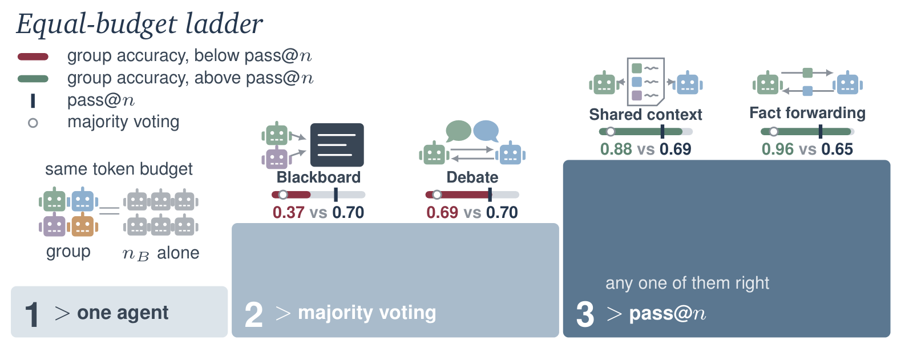

The equal-budget ladder
A group that spends the tokens of nB independent agents is compared with those agents. It reaches level 1 when it outperforms a single agent, level 2 when it outperforms their majority vote, and level 3 when it exceeds their pass@nB, the chance that any of them is right. No vote, judge or verifier that selects among independent answers can exceed pass@n, so a group at level 3 must have produced correct answers through what its members exchanged.
